The HVSR (Horizontal-to-Vertical Spectral Ratio) Analysis module offers a robust, real-time graphical interface to evaluate microtremor data. It computes site amplification frequencies and rigorously evaluates the reliability and clarity of the peaks based on the SESAME (2004) criteria.
Begin by loading your continuous waveform data (SAC or miniSEED format). The built-in Data Explorer allows you to navigate your filesystem, select 3-component data, and preview the raw seismograms instantly.
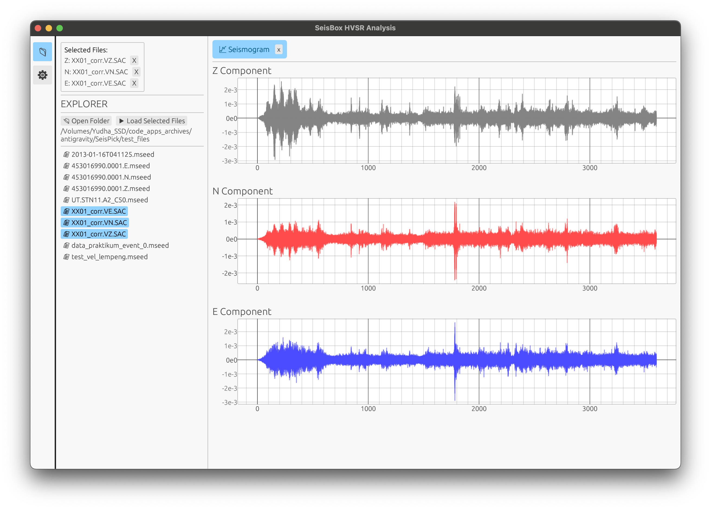
Tune your signal processing strategy dynamically. Set window lengths, overlaps, tapering methods, and Konno-Ohmachi smoothing constants. You can immediately see the effect of STA/LTA anti-triggering parameters.
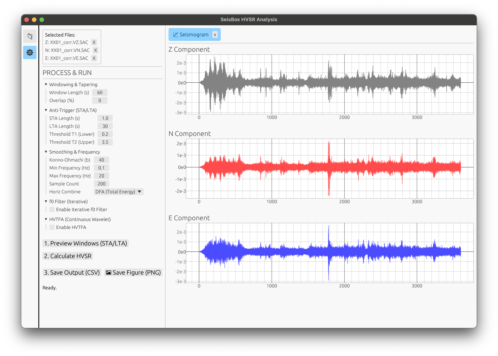
The "Data Windows" tab visualizes the division of the continuous trace into discrete time blocks. Green blocks indicate accepted stationary noise windows, while red blocks are rejected by the STA/LTA threshold to exclude transients.
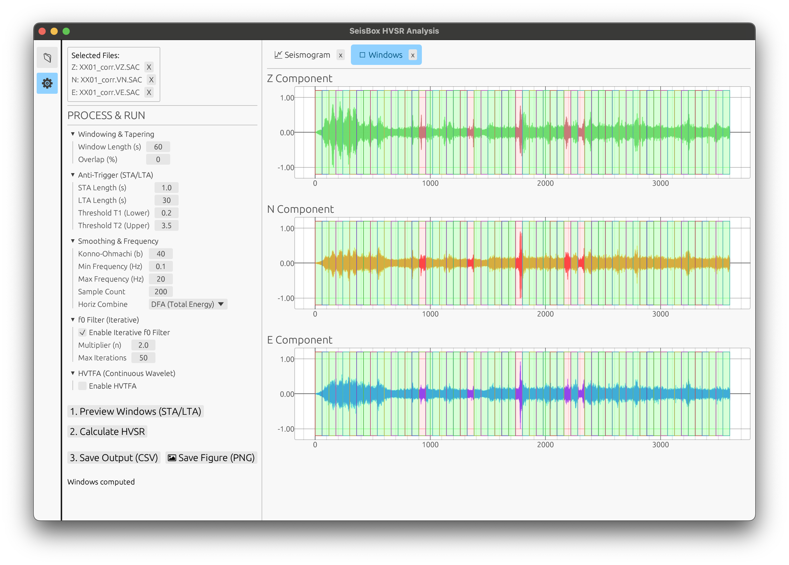
View the resulting Mean HVSR curve with standard deviation bounds. You can interactively drag the frequency boundaries to focus on the fundamental frequency (f0).
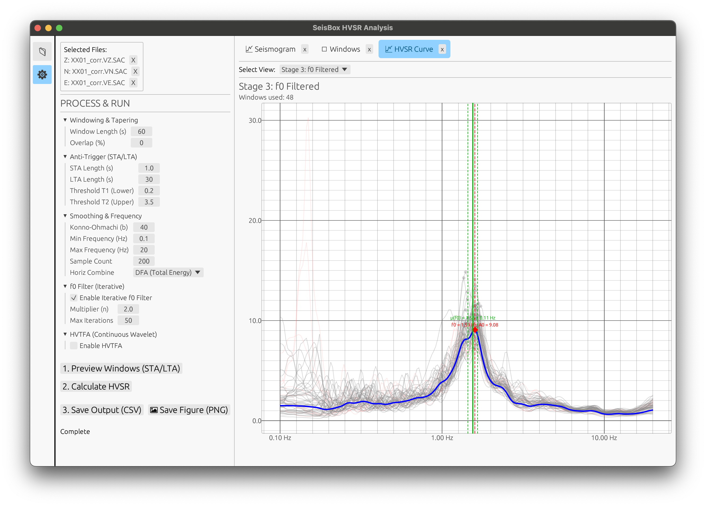
A convenient dropdown menu allows you to switch between viewing the Unfiltered curve, the STA/LTA filtered curve, or the curve processed with both STA/LTA and Variance screening.
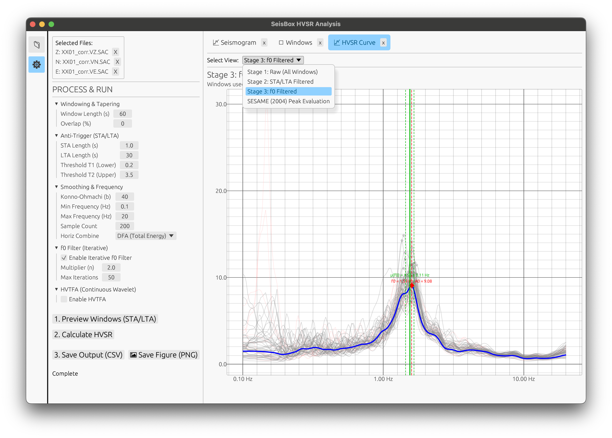
SeisBox automatically conducts strict algorithmic checks against the 6 SESAME criteria (3 for reliability, 3 for clarity) to validate your site's dominant frequency.
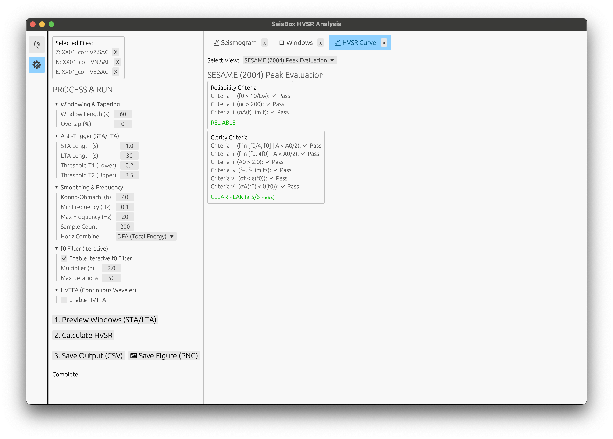
Investigate the temporal stability of the H/V ratio. The HVTFA map displays a spectrogram-like contour plot, helping you ensure that the peak frequency is persistent over time and not an artifact of a passing noise source.
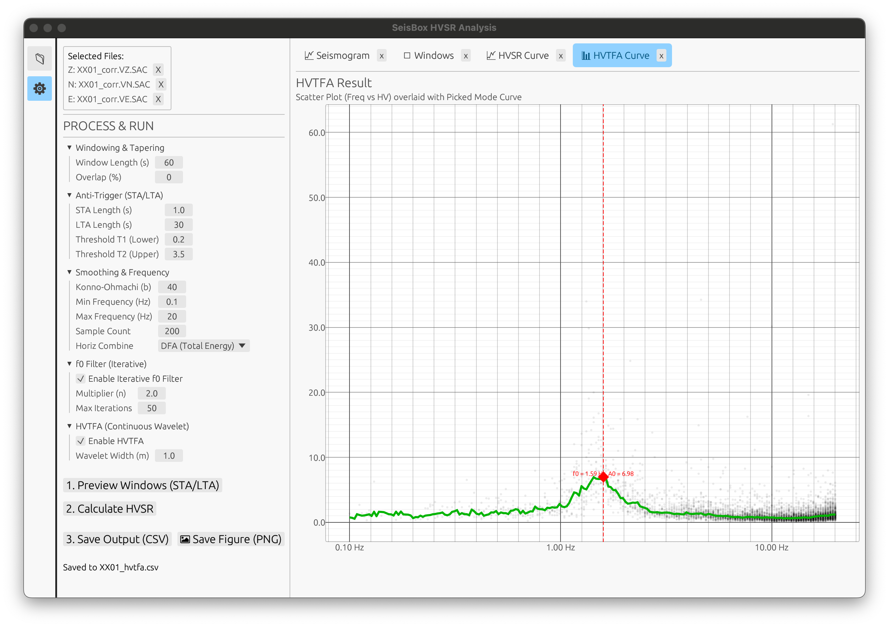
You can export the numerical results to a structured CSV file. The CSV file preserves all processing metadata, parameters, and the complete SESAME pass/fail evaluation in its header.
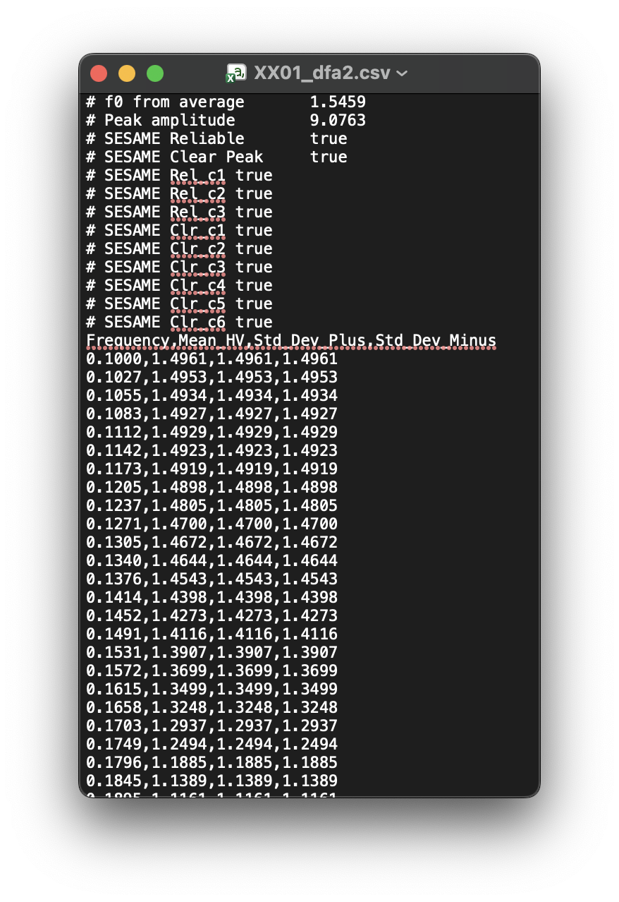
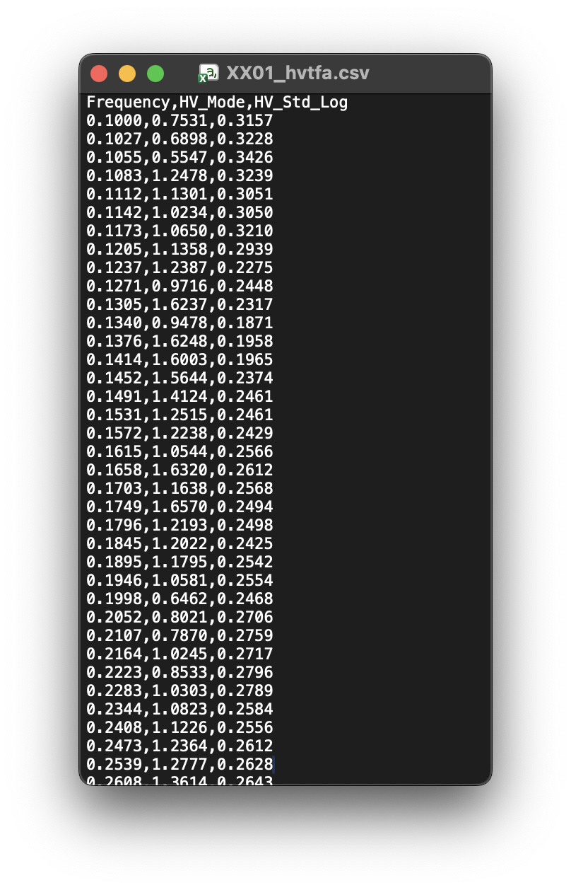
For publications and reports, export high-resolution plots directly from the interface.
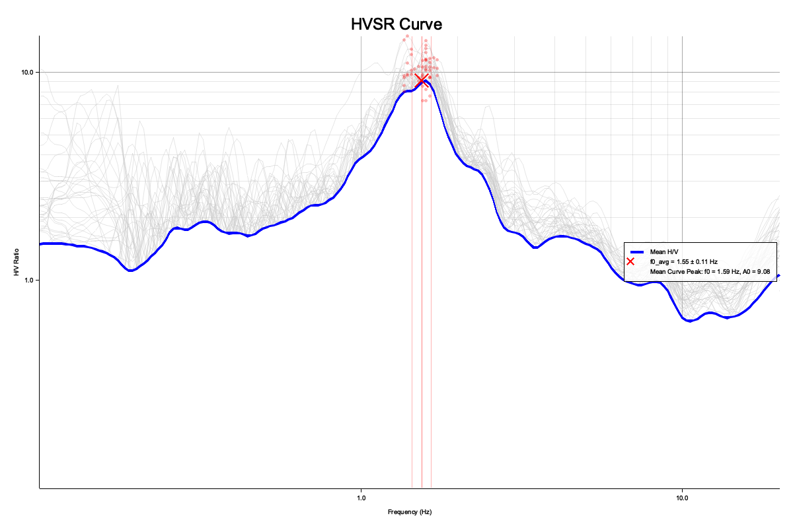
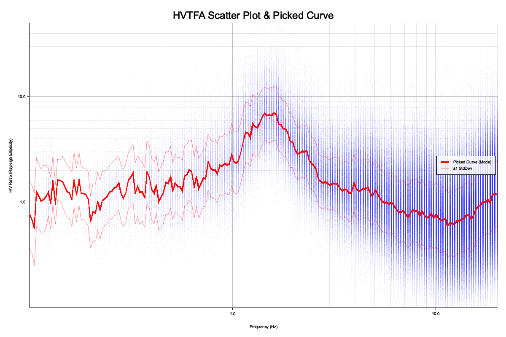